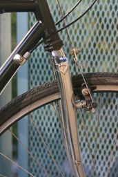
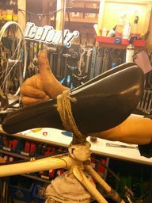
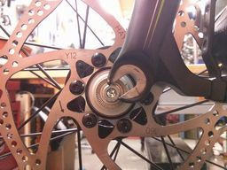
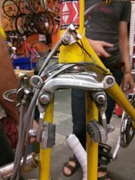

Bicycle Mechanics
Bicycle mechanics are the unsung heroes of the cycling world. They are responsible for ensuring the safety and functionality of bikes, which is crucial for the enjoyment and safety of cyclists. In this post, we will explore the world of bicycle mechanics and the vital role they play in the cycling community.
The Skill Required to be a Good Bicycle Mechanic
Being a good bicycle mechanic requires a great deal of skill and knowledge. Mechanics must be able to diagnose and fix a wide range of issues, from minor adjustments to major overhauls. They must have an understanding of bike components, including gears, brakes, wheels, and frames, as well as the tools needed to work on them. Additionally, they must be able to work efficiently and effectively while ensuring the safety and functionality of the bike.
Mechanics are Responsible for the Fun and Safety of Cyclists
Bicycle mechanics play a critical role in ensuring the safety and enjoyment of cyclists. A well-maintained bike can make all the difference in terms of performance and safety. A poorly maintained bike can be dangerous and even lead to accidents. Mechanics must ensure that bikes are safe to ride by checking components such as brakes, gears, and tires for wear and tear. They also ensure that bikes are comfortable and fit properly, which can greatly enhance the overall cycling experience.
The Sad Reality of Bicycle Mechanics' Pay
Despite the crucial role they play in the cycling community, bicycle mechanics are often underpaid and undervalued. The average salary for a bicycle mechanic in the United States is around $30,000 per year, which is significantly lower than other skilled trades. Many mechanics are self-employed or work for small businesses, which can make it difficult to earn a livable wage. This is a sad reality that needs to be addressed.
In conclusion, bicycle mechanics are an essential part of the cycling community. They ensure that bikes are safe and enjoyable to ride, and their work is crucial for the safety and enjoyment of cyclists. The skill and knowledge required to be a good mechanic are significant, and their work should be valued accordingly. It is unfortunate that many mechanics are underpaid and undervalued, and this is an issue that needs to be addressed. As a cycling community, we should recognize the importance of mechanics and support their work.
Previous post: Shiatsu Therapy
Next post: Shin Buddhism